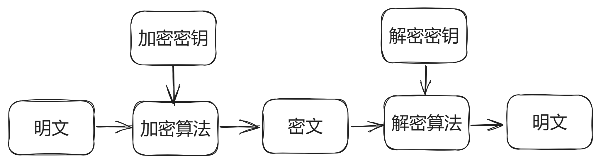

<!DOCTYPE html>
<html lang="en">
  <head>
    <meta charset="utf-8" />
    <meta name="viewport" content="width=device-width, initial-scale=1.0, maximum-scale=1.0, user-scalable=no" />

    <title>Crypto Base - 2023 AAA小学期</title>
    <link rel="shortcut icon" href="./favicon.ico" />
    <link rel="stylesheet" href="./dist/reset.css" />
    <link rel="stylesheet" href="./dist/reveal.css" />
    <link rel="stylesheet" href="./dist/theme/simple.css" id="theme" />
    <link rel="stylesheet" href="./css/highlight/github.css" />

    <link rel="stylesheet" href="./assets/custom.css" />

  </head>
  <body>
    <div class="reveal">
      <div class="slides"><section ><section data-markdown><script type="text/template">

<div class="middle center">
<div style="width: 100%">


# Crypto Math: 
# A Programmer's Perspective

<hr/>

2023 年AAA小学期课程

By [Jiachen Lu](https://github.com/ljcppp)

<div style="text-align: right; margin-top: 1em;">
<p>2023.7.10&emsp;&emsp;&emsp;</p>
</div>

</div>
</div>

</script></section><section data-markdown><script type="text/template">

## Crypto课程安排

- crypto基础 (today)
  - 导论
  - 数论
  - 群论
- crypto专题1 (7.13 by das schloss)
  - 对称密码
  - 非对称密码
  - 格密码
- crypto专题2 (7.16 by 4qwerty7)
  - Elliptic Curve Cryptography
  - Paillier同态加密

</script></section><section data-markdown><script type="text/template">

## 本节内容

- 什么是密码学？常见的密码学分类？分别有何特征？
- 数论基础
    - 整除、素数、最大公约数
    - 模运算和同余、逆元、中国剩余定理
    - 欧拉定理、RSA
- 群论基础
    - 什么是群、环、域
    - 群论与密码学（离散对数、ElGamal、同态

讲点课上讲的少的（x

</br>

为了易于理解，Slides中有些说法可能不够严谨/记法不统一

</script></section><section data-markdown><script type="text/template">

## 自我介绍（x：

- 非数学系选手
- 非Crypto研究生
- 非OI/*CPCer
- 我是fw😭

<hr/>

- 因为我比较菜，可能有些自己也理解的不是很深入🤡
- 希望不要被骂上98🤣👉😭
- 相对于小学期的其他课程可能有些“无聊”

</script></section></section><section ><section data-markdown><script type="text/template">

<div class="middle center">
<div style="width: 100%">

# Part.1 Overiew of Crypto

</div>
</div>

</script></section><section data-markdown><script type="text/template">

## 什么是密码学

密码学是研究编制密码和破译密码的技术科学。

- 设计加解密算法
- 破解加解密算法

<hr/>

### CTF中的密码学

- 根据给定的加密算法和密文拿到明文
- 随机数预测
- 等...

</script></section><section data-markdown><script type="text/template">

## 为什么需要密码学

- 存储：信息的存储可能是不安全的，会被窃取
- 传输：信息的传输过程可能也不是隐秘的，会被窃听

<font color="red">不能直接使用明文进行存储和传输！</font>

<hr/>

### 为什么需要Crypto手

- 密码学是安全（CTF）中重要的一部分
- 为了相关题目的分（x
- 相对于其他方向不好就业（x
  - 不过也还好现在大厂都有隐私计算的相关的岗位

</script></section><section data-markdown><script type="text/template">

## 基本术语

- 消息被称为**明文**（Plaintext）。用某种方法伪装消息以隐藏它的内容的过程称为**加密**（Encryption），被加密的消息称为**密文**（Ciphertext），把密文恢复为明文的过程称为**解密**（Decryption）。
- **密码算法**（Cryptography Algorithm）：是用于加密和解密的数学函数。
- **密钥**（Key）：加密或解密所需要的除密码算法之外的关键信息。
  - Kerckhoffs准则：一个安全保护系统的安全性不是建立在它的算法对于对手来说是保密的，而是应该建立在它所选择的密钥对于对手来说是保密的。

</script></section><section data-markdown><script type="text/template">

## 现代密码学概述

- 对称加密（Symmetric Cryptography）
  - 特点：在加密和解密时使用同一密钥，加密解密速度快
  - 例子：流密码（RC4）、块密码（AES、DES）
- 非对称加密（Asymmetric Cryptography）
  - 特点：在加密和解密时使用不同密钥，加密使用公钥，解密使用私钥，加密解密速度慢
  - 例子：RSA、ElGamal、ECC

<div style="text-align: center; margin-top: 15px;">

</div>

</script></section><section data-markdown><script type="text/template">

## 现代密码学概述

- 哈希函数（Hash Function）
  - 特点：把输入内容单向映射到一个短的摘要上
  - 应用：下载文件完整性校验
- 数字签名（Digital Signature）
  - 应用：对消息进行签名（也是一个短的消息），以防消息的冒名**伪造**或**篡改**

<div style="text-align: center; margin-top: 15px;">

</div>

</script></section><section data-markdown><script type="text/template">

## Take-away Notes

- 了解密码学的基本概念
- 了解对称和非对称加密的特点和区别
- 了解哈希函数和数字签名的应用


</script></section></section><section ><section data-markdown><script type="text/template">

<div class="middle center">
<div style="width: 100%">

# Part.2 Number Theory

</div>
</div>

</script></section><section data-markdown><script type="text/template">

## 整除

整除的定义: 设a、b均为整数,且a≠0, 若存在整数k使得b=a*k，则称a整除b，记作a|b。

整除相关的3个命题:
1. 对于任意整数a，都有1|a；若a≠0，则有a|0且a|a。
2. 若a|b且b|c，则a|c。
3. 若a|b且a|c，则a|(s\*b+t\*c)，其中s、t为任意整数。

</script></section><section data-markdown><script type="text/template">

## 最大公约数（gcd）

最大公因数是指能够整除多个整数的最大正整数。

gcd相关的定理: 设a、b为整数，且a、b中至少有一个不等于0，令d=gcd(a,b)，则一定存在整数x、y使得下式成立:

$$
a\*x + b\*y = d
$$

特别地，当a、b互素时，则一定存在整数x、y使得$a\*x+b\*y=1$成立。这里的x和y可以用扩展欧几里得定理求得。

</script></section><section data-markdown><script type="text/template">

## 素数与互素

- 素数的定义: 若整数p只有因子±1及±p, 则称p为素数。
- 互素(relatively prime)的定义:对于整数a、b，若gcd(a,b)=1，则称a、b互素。
（gcd: Greatest Common Divisor）

a=3, b=5  gcd(a,b)=1

a=3, b=4  gcd(a,b)=1

a=4, b=9  gcd(a,b)=1

素数相关的定理: 任一整数a(a>0)都能唯一分解成以下形式:

$$
a = p_1 * p_2 * p_3 * \cdots * p_t
$$

其中p1、p2、p3、...、pt是素数。

</script></section><section data-markdown><script type="text/template">

## 模(mod)运算和同余

同余的定义: 设a、b、n均为整数，且n!=0，当a-b是n的倍数时即a=b+n\*k(k为整数)，我们称a、b对于模n同余(a is congruent to b mod n)，记作:

a ≡ b (mod n)

可以理解为: a%n == b%n

例如:  1 ≡ 4 (mod 3)

例如:  5 ≡ 8 (mod 3)

</script></section><section data-markdown><script type="text/template">

## 模(mod)运算和同余

同余相关的命题: 设a,b,c,d,n均为整数，且n!=0，则有
- 当且仅当n|a时，有a≡0 (mod n)
- a≡a (mod n)
- 当且仅当 b≡a (mod n)时, 有a≡b (mod n)
- 若a≡b 且 b≡c (mod n)，则一定有a≡c (mod n)
- 若a≡b (mod n)且c≡d (mod n)，则有
   a+c≡b+d, a-c≡b-d, a\*c≡b\*d (mod n)

</script></section><section data-markdown><script type="text/template">

## 逆元 (inverse)

- 加法模逆元

定义: 若a+b = 0 (mod n), 则称a是b的加法模n逆元，b是a的加法模n逆元。

- 乘法模逆元

定义: 若a*b = 1 (mod n), 则称a是b的乘法模n逆元，b是a的乘法模n逆元。a的乘法逆元记作a-1。

例如：求13模35的乘法逆元</br>
设13模35的乘法逆元为x，则 13*x = 1 (mod 35) 上述等式成立的充要条件为gcd(13,35)=1

<font color="red">思考：如何求解inverse？</font> **基础作业**

</script></section><section data-markdown><script type="text/template">

## 同余方程
设 $f(x) = a_nx^n+a_{n-1}x^{n-1}+\cdots+a_1x+a_0$ 是一次数为 n 的整系数多项式，将含有变量x的同余式 $f(x) \equiv 0 \pmod m$ 称为模 m 的同余方程，多项式的次数 n 称为同余方程的次数。

若整数 c 满足 $f(c) \equiv 0 \pmod m$，则称c是同余方程的一个解。如果 c 是同余方程的解，那么对于任意整数k，km+c也是同余方程的解。

</script></section><section data-markdown><script type="text/template">

## 中国剩余定理
如果 $m_1,m_2,\cdots,m_k$ 是两两互素的正整数，则同余方程组

$$
\left \\{
\begin{aligned}
  x \equiv& a_1  \pmod{m_1} \newline
  \vdots& \newline
  x \equiv& a_k \pmod{m_k} \newline
\end{aligned}
\right.
$$

对模 $m=m_1 m_2\cdots m_k$ 有唯一解。
</br>
设 $M_i=m_1\cdots m_{i-1}m_{i+1}\cdots m_k$，$M_i'$ 为 $M_i$ 对模整数 $m_i$ 的逆元，上述方程组的解为：

$$
x \equiv \sum_{i=1}^k a_i M_i M_i' \pmod m
$$

</script></section><section data-markdown><script type="text/template">

## 欧拉函数

任意给定正整数n，请问在小于等于n的正整数之中，有多少个与n构成互质关系？
计算这个值的方法就叫做欧拉函数，以φ(n)表示。
- n=1，φ(n)=1
- 若n为素数，φ(n)=n-1 (显然1...n-1)
- 若n=p\*q，p q为不相同的质数，从定义上考虑，与p不互质的有q个，与q不互质的有p个，重复计算的有一个，所以：<br> 
$φ(n) = n - p - q + 1 = (p-1) * (q-1) = φ(p) * φ(q)$
- 若n=p^k，从定义上考虑，与n不互质的有p,2p,3p,...p^(k-1)*p，共p^k-1个，剩下的就是互质的，所以：<br> 
$φ(n) = p^k - p^{(k-1)} = n ∗ (1−1/p)$
- 所以对于 $n = p^{k_1} * p^{k_2} * \dots * p^{k_r}$ 有：<br>
$φ(n) = n * (1 - \frac{1}{p_1}) * (1 - \frac{1}{p_2}) * \dots * (1 - \frac{1}{p_r})$

</script></section><section data-markdown><script type="text/template">

## 欧拉定理

如果a和n互质，那么 $a^{\phi (n)} = 1\ mod \ n$

<hr/>

**证明**：设 [1,n)  内与 n 互质的数为数列 $\\{b_n\\}=\\{b_1,b_2,b_3,\cdots,b_{φ(n)}\\}$

因为 a,n 互质且 bi,n 互质，所以数列 $\\{A_n\\}=\\{ab_1,ab_2,ab_3,\cdots,ab_{φ(n)}\\}$ 中每个数都与 n 互质，且两两不同。

同时，由 $gcd(ab_i,n)=1$ 可得 $gcd(ab_i\pmod n,n)=1$，即每个 $A_i$ 除以 n 的余数都与 n 互质，且余数两两不同。

所以 $\\{A_n\\}$ 中的每个数一定与 $\\{b_n\\}$ 中的一个数同余，且一一对应。

</script></section><section data-markdown><script type="text/template">

## 欧拉定理
所以 $a^{φ(n)}\prod \limits_{i=1}^{\phi(n)} b_i =  \prod \limits_{i=1}^{\phi(n)} ab_i = \prod \limits_{i=1}^{\phi(n)} b_i \pmod n$

所以 $ n | a^{φ(n)}\prod \limits_{i=1}^{\phi(n)} b_i - \prod \limits_{i=1}^{\phi(n)} b_i $，即 $ n | (a^{φ(n)} - 1) \prod \limits_{i=1}^{\phi(n)} b_i $

又因 $gcd(n, \prod \limits_{i=1}^{\phi(n)} b_i) = 1$，所以 $ n | a^{\phi(n)} - 1 $，即 $a^{φ(n)} = 1 \pmod n$。


### 费马小定理
欧拉定理的特例。当n为质数p时，那么 $a^{p-1} = 1 \pmod n$

证明：φ(n) = p - 1

</script></section><section data-markdown><script type="text/template">

## 非对称加密回顾

- 特点：在加密和解密时使用不同密钥，加密使用公钥，解密使用私钥
- 如何产生**公私钥**和如何构造**加解密算法**？
- 1977年，罗纳德 · 李维斯特（Ron Rivest）、阿迪 · 萨莫尔（Adi Shamir）和伦纳德 · 阿德曼（Leonard Adleman）一起想了个办法。
- RSA 就是他们三人姓氏开头字母拼在一起组成的。


<div style="text-align: center; margin-top: 15px;">

</div>

</script></section><section data-markdown><script type="text/template">

## RSA
### 密钥生成
- 随机选择两个不同大质数 p 和 q，计算 N = p*q
- 根据欧拉函数，求得 φ(N) = φ(p)\*φ(q) = (p−1)\*(q−1) 
- 选择一个小于 φ(N) 的整数 e，使 e 和 φ(N) 互质。并求得 e 关于 φ(N) 的模反元素，命名为 d，有 ed≡1 (modφ(N))
  - 求逆用费马小定理就行
- 将 p​ 和 q​ 的记录销毁
- 此时，(N,e)  是公钥，(N,d) 是私钥。
- 安全性基本建立在大整数分解问题的困难性。（非形式化描述

</br>

<font color="red">思考：e 和 φ(N) 不互质会怎么样？</font>

</script></section><section data-markdown><script type="text/template">

## RSA
### 公钥加密
首先需要将消息以一个双方约定好的格式转化为一个小于N的整数m。如果消息太长，可以将消息分为几段。

例如，字符串ABC，先用Hex表示就是414243，16进制值即为4276803
$$
m^e = c\pmod n
$$

### 私钥解密

$$
c^d = m\pmod n
$$

然后再将m转换为消息。（BTW,可以使用前述CRT加速计算

</script></section><section data-markdown><script type="text/template">

## RSA正确性证明

$$
\begin{aligned}
  c^d & = (m^e)^d           \newline
      & = m^{e*d} \pmod n  \newline
      & = m^{k\*\phi(n)+1} \pmod n \newline
      & = m * m^{k\*\phi(n)} \pmod n \newline
      & = m * (m^{\phi(n)})^k \pmod n \newline
      & = m\pmod n
\end{aligned}
$$

其中，如果gcd(m,n)=1，最后一步直接由欧拉定理即可证明。

</script></section><section data-markdown><script type="text/template">

## RSA正确性证明

如果gcd(m,n) != 1

$$
\begin{aligned}
  \because n = p * q,\ gcd(m,n) \neq 1 \newline
  \therefore m = k_1p\ \mathrm{or}\ m = k_2q \newline
\end{aligned}
$$

不妨设 $m = k_1p$，由欧拉定理有：$m^{\phi(q)} = 1\pmod q = t_1q + 1$
</br>
所以，$m^{k*(p-1)*(q-1)} = 1 \pmod q = t_2q + 1$。
</br>
所以:
$$
\begin{aligned}
  m^{e \* d} & = m^{k \* \phi(p) \* \phi(q) + 1} \newline
             & = (t_2q + 1) * m  \newline
             & = (t_2q + 1) * (k_1p)  \newline
             & = t_2k_1pq + m
\end{aligned}
$$

</script></section><section data-markdown><script type="text/template">

## Take-away Notes
- 了解整数相关的基础数论知识
- 了解同余相关的基础数论知识
- 了解RSA的加解密过程和原理

</script></section></section><section ><section data-markdown><script type="text/template">

<div class="middle center">
<div style="width: 100%">

# Part.3 Foundations of Group

</div>
</div>

</script></section><section data-markdown><script type="text/template">

## 引子

数学的发展通常是先从简单的开始，然后不断放宽限制，推广到更一般化。

- 算术(arithmetic)
  - 算术是数学中最基础和初等的部分。算术只研究数的性质和运算。
- 初等代数
  - 用符号代替了具体的数字，产生了更加普遍求解数量关系的方法，方程。
- 抽象代数
  - 初等代数的进一步推广，不再限制于数，而是研究代数结构。
  - 一个集合再加上一套运算规则，就构成一个代数结构。
  - 群、环、域都是代数结构。


</script></section><section data-markdown><script type="text/template">

## 引子
19世纪尼尔斯·阿贝尔(Neils Abel)和埃瓦里斯特·伽罗瓦(Evariste Galois)为了证明五次方程的不可解性，创造了一个新的数学对象“群”，使代数学从解方程的科学转变为研究代数结构的科学。

应用于：密码学、物理 化学（对称性）、等领域。。。

密码学中：
- 密码学家往往希望找到一些特定的代数结构、能够轻易的完成某些运算而另一些运算（RSA中的逆元、椭圆曲线的离散对数等）则十分困难，用来构建公钥密码体系；
- 此外，作为构建线性变换算子的基础组件，群论的一些概念也经常出现在对称密码算法中。

将这个是为了探究一些和密码学相关的代数结构的『共性』与『本质』。

今天只会讲和密码学相对相关的一小部分群论知识。

</script></section><section data-markdown><script type="text/template">

## 什么是群

群论是 **元素的集合（不一定有限）** 和 **一种** **二元运算**的代数结构。

其中元素可以是任何数或者对象，运算也可以是任何运算，下面通过$\circ$表示。

一个群需要满足以下四条公理：（半群只需要满足前两条）
- Closure（封闭性）：任意两个元素“运算”得到的结果还是在群里。
- Associativity（结合律）：先算ab和先算bc的结果是一样的。
  </br>$\forall a,b,c \in G$，都有 $(a \circ b) \circ c = a \circ (b \circ c)$ 成立。
- Neutral：存在一个单位元。
  </br>$\exist e \in G$，对于 $\forall g \in G$，都有 $e \circ g = g \circ e = e$ 成立。
- Inverse：每个元素都存在逆元。
  </br>对于$\forall g \in G$，$\exist g^{-1} \in G$，使得$g \circ g^{-1} = g^{-1} \circ g = e$ 成立。

</script></section><section data-markdown><script type="text/template">

## 群的例子

正例：整数加法$\mathbb{Z}^+$
- 封闭性：整数加整数还是整数
- 结合律：$(a+b)+c = a+(b+c)$
- 单位元：0，零加任何数都等于它本身
- 逆元：$-a$，每个数对应的负数

反例：整数乘法$\mathbb{Z}^*$

不一定有逆元，比如对于4，不存在一个整数x，使得$4 \times x = 1$。

有理数乘法$\mathbb{Q}^*$，构成一个群，不过不包含0。

> 所以其实大家小学二年级就学过群（x

</script></section><section data-markdown><script type="text/template">

## 有限群和阶

一个群包含的元素的数量，称为这个群的阶(order)。

$$
|\mathbb{Z}^+|=|\mathbb{Q}^+|=|\mathbb{Q}^*|=\infty
$$

前述群的例子都是无限的，但是密码学中通常是“有限”的更加有用。

- 可以通过有限群抽象同余，用n个元素的有限群$\mathbb{Z}_n$抽象模n同余。
- 抽象的群的一些定理性质可以推广到具体的实例上，有点类似于接口和实现？

Example: $\mathbb{Z}_6^+$群下，单位元 加1次数 和 元素 对应关系表

|   元素   | 0 | 1 | 2 | 3 |  4 |  5 |
|:--------:|:-:|:-:|:-:|:-:|:--:|:--:|
|  加1次数  | 0 | 1 | 2 | 3 |  4 |  5 |
|          | 6 | 7 | 8 | 9 | 10 | 11 |

</script></section><section data-markdown><script type="text/template">

## 循环群
对于群$G^*$，若$\exist a\in G$使得$G=\{a^i | i\in \mathbb{Z}\}$，则称G为循环群，a为循环群G的生成元。

注：这里的$a^i$表示a连乘i次，比如$a^2$等价于$a*a$。

Example:
</br>
群$Z_{5-\\{0\\}}^*$是一个循环群，生成元可以是2，3。（不用加法群是为了引出离散对数 x
</br>
这个群的阶是4，有4个元素，分别是1，2，3，4。

| 生成元\次数  |  0  |  1  |              2               |  3  |  4  |
|:-----------:|:---:|:---:|:----------------------------:|:---:|:---:|
|      2      |  1  |  2  |              4               |  3  |  1  |
|      3      |  1  |  3  |              4               |  2  |  1  |
|      a      | a^0 | a^1 | <font color="red">a^2</font> | a^3 | a^4 |


</script></section><section data-markdown><script type="text/template">

## 元素的阶
对于群 $G^*$ 和元素 $a\in G$，若 $\exist n\in \mathbb{N}$，使得$a^n=e$，则称满足该条件的最小正整数n称为元素 a 的阶。

循环群$Z_{5-\\{0\\}}^*$的生成元不可以是4，4不是本原元。

|  生成元\次数  |  0  |  1  |    2    |    3    |  4  |
|:-----------:|:---:|:---:|:-------:|:-------:|:---:|
|      4      |  1  |  4  |    1    |    4    |  1  |
|    b=a^2    | b^0 | b^1 |   b^2   |   b^3   | b^4 |
|      a      | a^0 | a^2 | a^4=a^0 | a^6=a^2 | a^0 |

- 4只能生成1和4，不能生成该群的所有元素，所以不是生成元。4这个元素的阶是2。
- 生成元的阶就是群的阶。
- 4可以生成$Z_{5-\\{0\\}}^*$的**子群**。

</script></section><section data-markdown><script type="text/template">

## 子群
- 如果群$G^\*$的非空子集合H对于$G^\*$中的运算*也构成一个群，那么$H^\*$称为$G^\*$的子群。
- 仅有单位元素构成的子集合$\\{e\\}^*$和$G^*$本身显然都是$G^*$的子群。这两个子群称为$G^*$的**平凡子群**，其余的子群称为**非平凡子群**。

Example: $Z_{5-\\{0, 2, 3\\}}^*$是群$Z_{5-\\{0\\}}^*$的子群
- 封闭性：1\*1=1，1\*4=4，4\*1=4，(4\*4)%5=1
- 结合律：小学二年级就学过乘法的结合律
- 单位元：1；1\*4=4，4\*1=4
- 逆元：1\*1=1，(4\*4)%5=1

</script></section><section data-markdown><script type="text/template">

## 离散对数
对于循环群$G^\*$，离散对数问题是指：给定G中两个元素a,b，找到正整数k，使得 $b=a^k$ 成立。

通常把k称为b相对于a的**离散对数**，记作$k = log_ab$

- 离散对数在**一些特殊情况下**可以快速计算。然而，通常没有具非常效率的方法来计算它们。
- 离散对数问题求解的困难性是一类公钥密码学的基础，比如Elgamal和Elliptic Curve Cryptography。

然后以加法群和乘法群为例介绍离散对数

</script></section><section data-markdown><script type="text/template">

## 加法群的离散对数
加法群的离散对数问题是平凡的（可以快速计算的）。

对于循环群$Z^+_m$，离散对数问题是指：给定$Z^+_m$中两个元素a,b，找到正整数k，使得 $b=a\*k$ 成立。

即求解k，使得 $b = a \* k \pmod m$。

本质就是求a模m下的逆元，用扩展欧几里得算法很容易求解（虽然本课程没讲）。

</script></section><section data-markdown><script type="text/template">

## 乘法群的离散对数
乘法群的离散对数问题大多是困难的（难以计算的）。

对于循环群$Z^*_m$，离散对数问题是指：给定$Z^*_m$中两个元素a,b，找到正整数k，使得 $b=a^k$ 成立。

即求解k，使得 $b = a ^ k \pmod m$。

Elgamal就是基于上述困难问题的一种公钥密码机制。

</script></section><section data-markdown><script type="text/template">

## Elgamal
### 密钥生成
1. 选择一个大素数p和生成元g，构成循环群$Z^*_p$，群的阶是p-1。
2. 随机选择一个区间\[2, p-2\]中的整数d作为私钥
3. 计算$h=g^x \pmod p$
4. 公开(p, g, h)作为公钥，私钥是d

</script></section><section data-markdown><script type="text/template">

## Elgamal
### 公钥加密
1. 随机选择一个区间\[2, p-2\]中的整数y，计算$C_1=g^y \pmod p$
2. 计算$s = h^y \pmod p$
3. 把要发送的秘密消息m映射为群$Z^*_p$上的一个元素m'。
4. 计算$C_2=m'\*s \pmod p$
5. 密文是$(C_1, C_2) = (g^y,m'\*g^{x*y})$


</script></section><section data-markdown><script type="text/template">

## Elgamal
### 私钥解密
1. 计算$s = C_1^d \pmod p$
2. 计算$m' = C_2 \* s^{-1} \pmod p$

<hr/>

### 正确性证明
$C_2 \* s^{-1} = m' \* h^y \* (g^{xy})^{-1} = m' \* g^{xy} \* g^{-xy} = m'$

</script></section><section data-markdown><script type="text/template">

## BSGS
除了枚举，还有一种相对快速求解离散对数的方法，叫做BSGS（Baby-step giant-step）。

算法复杂度$O(\sqrt{n})$。

原理：对于生成元是g的n阶循环群，取$m=\lceil \sqrt{n} \rceil$，对于任意的正整数d（离散对数），总可以表示为$d = i\*m + j$，其中$0 \leq i, j < m$。(把n分成两部分分治

所以，$h = g^d = g^{i\*m + j} = g^{i\*m} \* g^j$。

所以，$h \* (g^{-m})^i = g^j$

所以，打一张$g^j$的表再计算左边就行了，打表和遍历左边的时间复杂度都是$O(\sqrt{n})$，查哈希表时间时间复杂度$O(1)$。

</script></section><section data-markdown><script type="text/template">

## BSGS

输入：以n阶循环群G的一个生成元g，G中的一个元素h

输出：离散对数$d = log_gh$

1. 设 $m=\lceil \sqrt{n} \rceil$
2. 以 $g^j$ 为索引建立一张表 $(g^j, j)$，$0\leq j<m$。
3. 设 $tmp = h$。
4. 对于i从0到m－1进行如下计算
   1. 检查 tmp 是否在表中
   2. 如果在表中则返回(d=i\*m+j)
   3. 设 $tmp = tmp \* g^{-m} $

</script></section><section data-markdown><script type="text/template">

## 质数与Pohlig-Hellman
前面提到，乘法群的离散对数问题大多是困难的（难以计算的）。也讲了基于 大素数p 和 生成元g，构成的循环群$Z^*_p$ 上的公钥加密算法Elgamal。

思考：不同的大素数p构成的群$Z^*_p$，求解离散对数难度是相同的吗？

<div class="fragment">

- 显然是不同的，不然就不会做这页slide了。（x
- 今天要讲的这种weakness主要和群的**阶**相关。

回顾：一个群包含的元素的数量，称为这个群的阶(order)。

虽然群的$Z^*_p$中的p是质数，可能给人一种很强的感觉（x，但是这个群的阶是p-1，是一个合数。当群的阶是**光滑**的时候，离散对数就会弱一些，可以用Pohlig-Hellman算法来解决。

</div>

</script></section><section data-markdown><script type="text/template">

## Pohlig-Hellman
光滑：即可以因子分解成较小的数的乘积。也意味着群$Z^*_p$有很多小的子群。所以，可以把 大群上的离散对数问题 转换成 易求的子群上的离散对数问题，最后组合起来。

比如对于任意离散对数问题：$a^x=b \pmod p$，对于生成元g，有

$$
\left \\{
\begin{aligned}
  a = g^{a'}  \pmod p \newline
  b = g^{b'}  \pmod p
\end{aligned}
\right.
$$

进一步有 $a^x=b  \pmod p \Leftrightarrow g^{a'x} = g^{b'} \pmod p$，有 $a'x = b' \pmod{p-1}$，如果求出了满足上式的 a' 和 b'，通过扩展gcd方法可以求一次同余方程的解得到x。

如何求 a' 和 b'？

</script></section><section data-markdown><script type="text/template">

## Pohlig-Hellman

以求 a' 为例，解DLP问题：$g^{x}=a \pmod p $：
1. 设 $p-1 = p_1^{k_1} \* p_2^{k_2} \* ... \* p_m^{k_m}$(m为质因子个数)
2. 对于每个质因子$p_i$，列出方程$x = p_i^0 \* a_0 + p_i^1 \* a_1 + p_i^2 \* a_2 + \cdots +p_i^{k_{i-1}} \* a_{k_{i-1}} \ (\mathrm{mod}\ p_i^{k_i})$ (即把x写成$p_i$进制，每个系数都小于$p_i$)。
3. 令 r=1 时，有$(g^x)^{\frac{p-1}{p_i^r}} = a^{\frac{p-1}{p_i^r}} \pmod p$，展开x有$(g^{p_i^0 \* a_0 + p_i^1 \* a_1 + p_i^2 \* a_2 + \cdots +p_i^{k_{i-1}} \* a_{k_{i-1}}})^{\frac{p-1}{p_i^r}} = a^{\frac{p-1}{p_i^r}} \pmod p$注意从第二项开始，每一项指数都包含 p−1，由费马小定理知 $ g^{p-1} = 1 \pmod p$ ，所以式子变成$g^{a_0\frac{p-1}{p_i}} = a^{\frac{p-1}{p_i}}$ 这个式子中只有 a0 是未知的，因为 a0∈[0,pi−1]，所以可以穷举（或者BSGS）得到 a0 的值。

​
</script></section><section data-markdown><script type="text/template">

## Pohlig-Hellman

4. 再令 $r=2,3,4,\cdots,k_i$ ，重复步骤3，依次求出 $a_1,a_2,\cdots,a_{k_i}$ ，整个的时间复杂度是 $O(p_ik_i)$。可以得到 $x = a_0 + a_1p_i + a_2p_i^2 + \cdots + a_{k_{i-1}}p_i^{k_{i-1}} \pmod{p_i^{k_i}}$
5. 重复上述过程，得到 m 个关于 x 的式子，利用中国剩余定理（CRT），可以计算出 x 的值。
6. 利用这个方法求出 a' 和 b' 后，就可以得到原DLP问题的解。

</script></section><section data-markdown><script type="text/template">

## 同态
设G和G’是两个群，f是群G到群G'的一个映射。对于任意$a,b,c\in G$，如果存在$a\*b=c$，G'上也同样存在$f(a)\*f(b)=f(c)$，则称f是群G到群G'的一个同态映射。

Example: $Z^+$和$Z_n^+$是同态的，f(x) = x % n。

当 n = 5时：

| 元素 | 1 | 3 | 5 | 7 | 9 |
|:----:|:-:|:-:|:-:|:-:|:-:|
|   x  | 1 | 3 | 5 | 7 | 9 |
| f(x) | 1 | 3 | 0 | 2 | 4 |

- 在这个例子里同态其实就是同余

</script></section><section data-markdown><script type="text/template">

## 同态与同构
设G和G'是两个群，f是群G到群G'的一个映射。对于任意$a,b,c\in G$，如果存在$a\*b=c$，G'上也同样存在$f(a)\*f(b)=f(c)$，则称f是群G到群G'的一个同态映射。

- 当该映射是满射时，称f是群G到群G'的一个满同态映射。
- 当该映射是一一映射，则称f是群G到群G'的一个同构映射。
- 若群G和群G'之间存在同构映射，则称群G和群G'同构。用符号$G\cong G'$表示群G和群G'同构。

<hr/>

同态有什么用呢？

比如保护隐私。

</script></section><section data-markdown><script type="text/template">

## 同态加密
将原文加密，然后在密文上进行各种运算，最终得到结果 和 在原文上进行同样运算再加密的结果是一样的。

优点
- 可以对加密的数据进行推理，模型所有者不能看到客户的私人数据，因此不存在泄露或滥用私有敏感数据。
- 不需要在数据和模型所有者之间进行频繁的通信来达到计算目的。

缺点
- 计算成本高。
- 限于某些类型的计算。

</script></section><section data-markdown><script type="text/template">

## 同态加密
Example:

- Paillier 加密，基于复合剩余类的困难问题。其满足于加法同态，即密文相乘等于明文相加 (4老师之后会讲)

$$
D(E(m_1) \* E(m_2)) = m_1 + m_2
$$

- RSA 加密，满足于乘法同态。

$$
D(E(m_1) \* E(m_2)) = m_1 \* m_2
$$

- 全同态加密（Fully Homomorphic Encryption/FHE），同态加密的最终目标，即没有限制，满足任意的密文计算均可完美还原出明文。

$$
D(F(E(m_1, \cdots, m_n))) = F(m_1, \cdots, m_n)
$$

</script></section><section data-markdown><script type="text/template">

## Ring and Field

<div class="mul-cols">
<div class="col">

<div style="text-align: left; margin-top: 15px; margin-left: 15px">

</div>

</div>
<div class="col">

<div class="middle center">
学计算机的：字段
</br></br>
环和域都是群的扩展
</div>
</div>
</div>

</script></section><section data-markdown><script type="text/template">
## 环
**环**$(R,+,\cdot)$由一个集合$R$和两个二元运算$+$和$\cdot$组成，且满足如下性质：

1. $(R,+)$是一个交换群。
2. $(R,\cdot)$是一个半群。
3. 分配律：$\forall a,b,c\in R, a\cdot (b+c)=a\cdot b+a\cdot c$和$(a+b)\cdot c=a\cdot c+b\cdot c$。

$(R,\cdot)$满足交换性的环被称为**交换环**。

Example: 集合$\mathbb{Z}$的加法和乘法构成环（交换环）。

</script></section><section data-markdown><script type="text/template">

## 域
**域**$(F,+,\cdot)$由一个集合$F$和两个二元运算$+$和$\cdot$组成，且满足如下性质：

1. $(F,+)$是一个交换群。
2. $(F\\{0\\},\cdot)$是一个交换群。这里将$(F,+)$的单位元记作$0$
3. 分配律：$\forall a,b,c\in R, a\cdot (b+c)=a\cdot b+a\cdot c$和$(a+b)\cdot c=a\cdot c+b\cdot c$。

Example: 而集合$\mathbb{R}$的加法和乘法构成域。

域(Field)在交换环的基础上，还增加了二元运算除法，要求元素(除零以外)可以作除法运算，即每个非零的元素都要有乘法逆元。

</script></section><section data-markdown><script type="text/template">

## 有限域

有限域F是指只含有限个元素的域，F的阶是指F中元素的个数。有限域又称为Galois域。若域F的阶为n，则可将F记为Fn或GF(n)。

- 可以用GF(2)表示二进制数域，即0和1。
- 异或操作：GF(2)上的加法 1^1=0 GF(2)上1+1也是0
- 与操作：GF(2)上的乘法 1*1=1 

<hr/>

由于一个字节是8个bit，所以计算机和密码学领域中常用的有限域是GF(2^8)，即8个bit上的有限域。

可以用7次多项式表示有限域上的元素，通过7次多项式的系数表示。
比如：
- 0x57=0b01010111，可以写成$x^6+x^4+x^2+x+1$。
- 0x83=0b10000011，可以写成$x^7+x+1$。

</script></section><section data-markdown><script type="text/template">

## GF(2^8)上运算

- GF(256)上的加法就是多项式加法
- GF(256)上的乘法就是模本原多项式的乘法（证明略需要讲到除环
  - 本原多项式就是不可以分解的多项式
- GF(256)上常用的不可约多项式：$x^8+x^4+x^3+x^2+1$

### 加法
$$
\begin{aligned}
  0x57 + 0x83 = (x^6+x^4+x^2+x+1) + (x^7+x+1)   \newline
= x^7+x^6+x^4+x^2+2x+2  \newline
= x^7+x^6+x^4+x^2  \newline
= 0xd4
\end{aligned}
$$

同样的，0x57 ^ 0x83=0xd4。

</script></section><section data-markdown><script type="text/template">

## GF(2^8)上运算

- GF(256)上的加法就是多项式加法
- GF(256)上的乘法就是模本原多项式的乘法（证明略需要讲到除环
  - 本原多项式就是不可以分解的多项式
- GF(256)上常用的不可约多项式：$x^8+x^4+x^3+x^2+1$

### 乘法
$$
\begin{aligned}
0x57 \* 0x83 = (x^6+x^4+x^2+x+1)(x^7+x+1)  \newline
 = x^{13} + x^{11} + x^9 + x^8 + x^7 +  \newline
   x^7 + x^5 + x^3 + x^2 + x +  \newline
   x^6 + x^4 + x^2 + x + 1 \newline
= x^7+x^6+1 = 0xc1
\end{aligned}
$$


</script></section><section data-markdown><script type="text/template">

## xtime
- 用于加速有限域上的多项式乘法，类似于快速幂
- 在AES中有应用

定义函数xtime，其中xtime(a)=a\*0x02,也就是说这个函数的返回值 是这个函数的参数 在GF(256)上与0x02的乘积。

应用：0x57 \* 0x13

先求0x57的多次xtime: </br>
xtime(0x57)=0xAE，xtime(0xAE)=0x47，</br>
xtime(0x47)=0x8E，xtime(0x8E)=0x07

然后应用分配律有：
</br>
  0x57 \* 0x13 </br>
= 0x57 \* (0x01 + 0x02 + 0x10) </br>
= 0x57 + 0xAE + 0x07

</script></section><section data-markdown><script type="text/template">

## Take-away Notes
- 对群、环、域有基本的认识
- 对离散对数问题有基本的认识
- 对同态有基本的了解

<hr/>

### Other Related Key Words
- 陪集，拉格朗日定理（为什么子群 $Z_{5-\\{0, 2, 3\\}}^*$ 的阶(2)整除群 $Z_{5-\\{0\\}}^*$ 的阶(4)
- 商群
- 同态基本定理

</script></section></section><section ><section data-markdown><script type="text/template">

<div class="middle center">
<div style="width: 100%">

# 总结

</div>
</div>

</script></section><section data-markdown><script type="text/template">

## 作业
- 基础：完成对gcd以及inverse的求解算法，编程语言不限，但只能使用标准库。
- 进阶：4老师精选oi题
  - 质因数不够大而容易被分解，则在 $Z_{pq}$ 上求逆很简单：[CCPC 2019 Final - K. Mr. Panda and Kakin](https://codeforces.com/gym/102055/problem/K)；
  - 群的阶不含大质因子时，离散对数易被求得：[2019 HDU Multi-University Training Contest 5 - 9. discrete logarithm problem](https://acm.hdu.edu.cn/showproblem.php?pid=6632)；

</script></section><section data-markdown><script type="text/template">

## References

- [Crypto Base - 2023 AAA小学期](https://github.com/team-s2/ctf_summer_courses/tree/main/slides/crypto)
- [史上最好的群论入门](https://www.bilibili.com/video/BV1PM411g7o8)
- [代数结构入门：群、环、域、向量空间](https://zhuanlan.zhihu.com/p/21583674)
- [离散对数](https://lazzzaro.github.io/2020/05/07/crypto-%E7%A6%BB%E6%95%A3%E5%AF%B9%E6%95%B0/)
- [同态加密介绍](https://zhuanlan.zhihu.com/p/77478956)


</script></section><section data-markdown><script type="text/template">

<div class="middle center">
<div style="width: 100%">

# 谢谢大家

<hr/>

**Questions?**

</div>
</div></script></section></section></div>
    </div>

    <script src="./dist/reveal.js"></script>

    <script src="./plugin/markdown/markdown.js"></script>
    <script src="./plugin/highlight/highlight.js"></script>
    <script src="./plugin/zoom/zoom.js"></script>
    <script src="./plugin/notes/notes.js"></script>
    <script src="./plugin/math/math.js"></script>
    <script>
      function extend() {
        var target = {};
        for (var i = 0; i < arguments.length; i++) {
          var source = arguments[i];
          for (var key in source) {
            if (source.hasOwnProperty(key)) {
              target[key] = source[key];
            }
          }
        }
        return target;
      }

      // default options to init reveal.js
      var defaultOptions = {
        controls: true,
        progress: true,
        history: true,
        center: true,
        transition: 'default', // none/fade/slide/convex/concave/zoom
        slideNumber: true,
        plugins: [
          RevealMarkdown,
          RevealHighlight,
          RevealZoom,
          RevealNotes,
          RevealMath.KaTeX
        ]
      };

      // options from URL query string
      var queryOptions = Reveal().getQueryHash() || {};

      var options = extend(defaultOptions, {"transition":"slide","transitionSpeed":"fast","center":false,"slideNumber":"c/t","width":1000}, queryOptions);
    </script>

    <script src="https://cdn.tonycrane.cc/heti/heti.js"></script>
    <script src="./assets/heti_worker.js"></script>

    <script>
      Reveal.initialize(options).then(() => {
        document.querySelector(".backgrounds").setAttribute("style", document.querySelector(".slides").style.cssText);
      });
      Reveal.on('overviewshown', event => {
        document.querySelector(".backgrounds").setAttribute("style", "");
      });
      Reveal.on('overviewhidden', event => {
        document.querySelector(".backgrounds").setAttribute("style", document.querySelector(".slides").style.cssText);
      });
      Reveal.on('resize', event => {
        document.querySelector(".backgrounds").setAttribute("style", document.querySelector(".slides").style.cssText);
      });
    </script>
  </body>
</html>